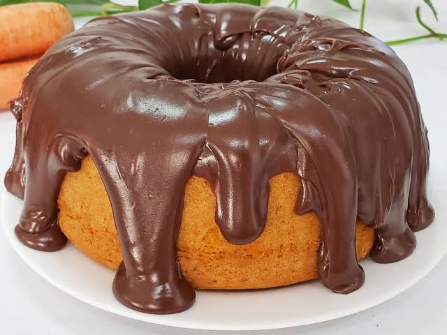

Bolo de Cenoura Com Cobertura de Chocolate
Receita fofinha e com cobertura crocante

Tempo
45 min
Rendimento
10 porções
Dificuldade
Fácil
Ingredientes
Massa:
3 cenouras médias picadas
3 ovos
1 xícara de óleo
2 xícaras de açúcar
2 xícaras de farinha de trigo
1 colher de sopa de fermento em pó
Cobertura:
1 colher de manteiga
3 colheres de chocolate em pó
1 xícara de açúcar
1 xícara de leite
Modo de Preparo
Massa:
Bata no liquidificador a cenoura, os ovos e o óleo.
Adicione o açúcar e bata mais um pouco.
Despeje em uma vasilha e misture a farinha de trigo aos poucos.
Por último, coloque o fermento e misture devagar.
Coloque em uma forma untada e leve ao forno por 40 minutos.
Cobertura:
Misture todos os ingredientes da cobertura em uma panela.
Leve ao fogo até ferver e ficar grosso.
Jogue por cima do bolo depois dele ter esfriado um pouco..